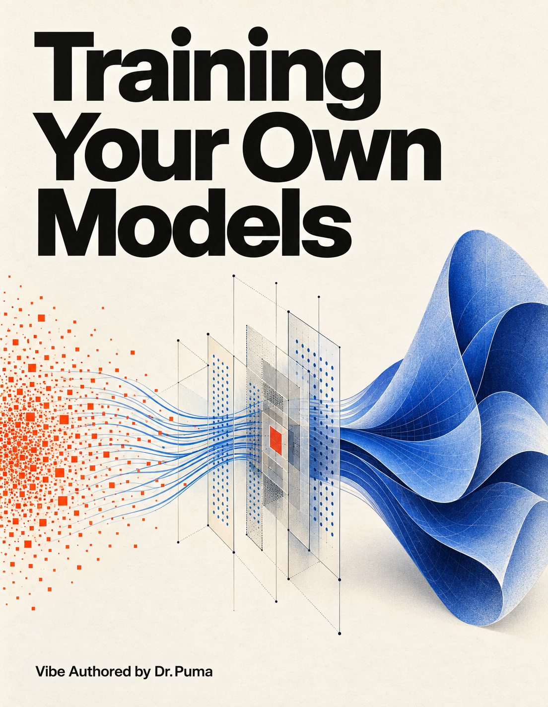

A project-first handbook · Web edition
Training
Your Own
Models.
On One 24 GB GPU
Start with three parameters. Learn what changes, why it changes, and how to know whether it worked.

Small experiments. Clear thinking.
Build the understanding
before the bigger model.
From your first classifier to language, vision, speech, and sound. Follow the complete book, inspect a definition, or explore one idea in your browser.
Watch a parameter learn
Take gradient steps. Change the learning rate. See the loss respond.
Open the experiment ↗02 / PlanMake the memory visible
Separate weights, gradients, and optimizer states before planning a run.
Try the calculator ↗03 / ConnectFind the missing definition
Every glossary term links back to an explanation in the book.
Browse the glossary ↗The complete book
One project at a time.
New to neural networks? Begin with the reading guide, then work through the chapters in order.
Train your first model before learning the whole field
02Your computer and the training workspace
03Numbers tensors parameters and learning
04Project turn four sensor readings into a useful prediction
05Build a dataset that teaches the job
06Decide whether the model actually improved
07Move from feature columns to neural representations
08Project classify your own small image collection
09Project locate one object with a box
10Project predict a mask then extract an outline
11Train a miniature language model from random weights
12How a language model becomes a prediction machine
13Read and control the training loop
14Make a run reproducible and recoverable
15The real memory and compute budget
16Project make related text easy to retrieve
17Choose a model by its actual structure and files
18Teach a small language model one useful behavior
19Repeat the project with every weight trainable
20Teach domain conventions without turning weights into a database
21Make a writing style reproducible without changing the facts
22Teach a tool decision and a complete tool interaction
23Study a small typed decision service
24From a language model to a decision model
25Add preferences and distillation only after supervised learning works
26Project teach an image generator a small visual style
27Speech recognition train a small model to hear your domain
28Project build a tiny sound generator from random weights
29Scale a working experiment toward one billion parameters
30Understand what a public training process really demonstrates
31Diagnose failures before making the model larger
32From small model to small device product
33Turn a checkpoint into a usable application
34Design your first independent model
35Understand larger models using the parts you already know
36Read MiMo GLM and other architecture families
37Connect architecture to data memory and deployment
38Learn from public training projects without copying their assumptions
39Exercise checkpoints and worked answers
40Companion guide and verification record
Read the evidence carefully
A recipe is a starting point.
No GPU training or 24 GB peak-memory measurements were performed for this edition. The book distinguishes documented capabilities, worked calculations, proposed configurations, and explicitly recorded checks.